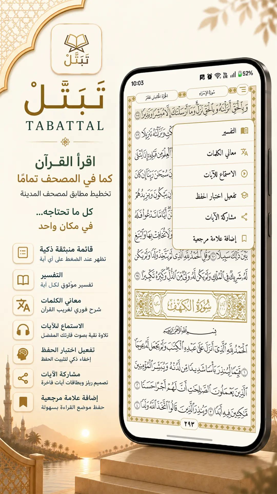

Verses and reciter
Set the verse range and choose the recitation for your clip.
Tabattal brings the precise Madinah Mushaf together with recitation, tafsir, memorization tools, and synchronized Quran video creation—free, ad-free, and privacy-first.

Tabattal opens on the Mushaf page, remembers your place, and keeps reading, listening, and understanding tools close without getting between you and your recitation.
15-line layout with clear QCF V2 fonts on every screen.
Multiple reciters, repeat, downloads, and lock-screen controls.
Dark mode, multiple themes, and horizontal or vertical reading.

Choose the verses, reciter, background, and format. Preview it in sync, then save or share.
Set the verse range and choose the recitation for your clip.
Use a ready theme, an image, or a video from your device.
Show the full verse or reveal it line by line with the recitation.
Export and save directly to your device to share across your favorite platforms.
Hide verses or words and reveal them with a tap in the same Mushaf positions.
Understand context and unfamiliar Quranic words from sources inside the app.
Search by text, surah, juz, or page and explore Quran topics.
Return to your last page and bookmark verses and surahs for later.
Video, verse card, Quran text, or a complete Mushaf page image.
11 themes with true dark mode and horizontal or vertical reading.
No account, ad, or screen interrupts your routine.
Repeat verses or hide and reveal them without leaving the page.
Create a video or card in the format that fits.
Free, ad-free, tracker-free, and with no forced account. Built as an ongoing charity so the Quran stays at the center—not a means to collect data or sell attention.
Start now
Get Tabattal for Android or open it directly in your browser.